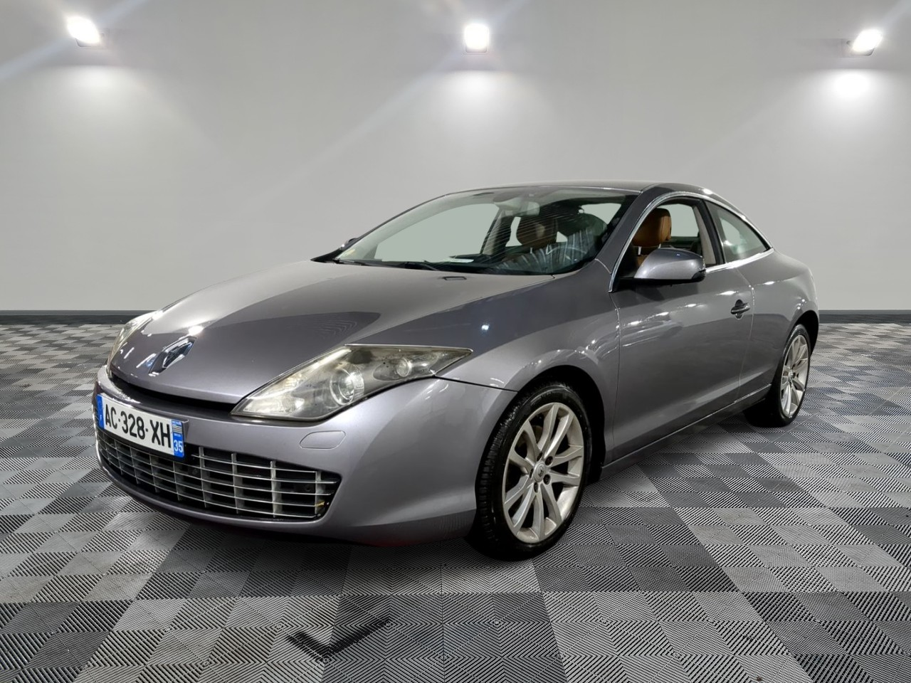
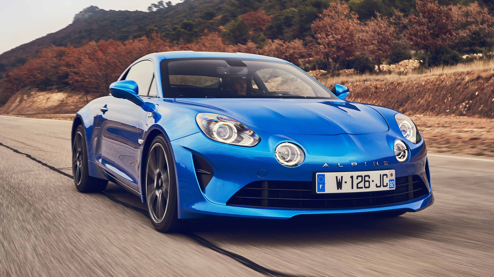

Moteur
1.8L 16V TurboPuissance
De 280 à 300 ch (version Trophy)Traction
Manuelle à 6 vitessesEDC (automatique)
Consommation
Environ 7.5 L/100 kmVolume coffre
384 LDimensions
Longueur : 4 290 mm,Largeur : 1 855 mm
Technologies
freinage Brembo,suspensions réglables,
aide au démarrage en côte
régulateur de vitesse adaptatif,
châssis Sport ou Cup (selon la version),
Système R.S. Monitor (suivi des performances)

Moteur
Essence 2.0L, 3.5L V6 Diesel 2.0LPuissance
De 140 à 240 chTransmission
Manuelle ou automatiqueConsommation
Environ 6.0 à 9.0 L/100 kmVolume coffre
400 LDimensions
Longueur : 4 628 mm,Largeur : 1 844 mm
Technologies
Aide au freinage d’urgence,Système Carminat (navigation),
Régulateur de vitesse adaptatif,
Direction assistée variable, suspensions pilotées

Moteur
2.0L 16V (version précédente)Puissance
Environ 200 ch (version 3)Transmission
Manuelle à 6 vitessesAutomatique (EDC)
Consommation
Environ 7.0 L/100 kmVolume coffre
288 LDimensions
Longueur : 4 033 mm,Largeur : 1 749 mm
Technologies
Système R.S. Drive,ESP sport,
Suspensions sport,
Châssis renforcé,
Régulateur de vitesse

Moteur
1.8L Turbo (moteur central arrière)Puissance
252 à 292 ch (version A110 S)Traction
Manuelle à 6 vitessesAutomatique (double embrayage)
Consommation :
Environ 6.0 à 7.0 L/100 kmVolume coffre
112 L (avant et arrière combinés)Dimensions
Longueur : 4 053 mm,Largeur : 1 798 mm
Technologies
Châssis alu, suspensions sport,Systèmes d’assistance à la conduite (Alerte de franchissement de ligne, régulateur de vitesse),
Système de navigation moderne
Moteur
Moteur électrique 65 kW (88 ch)Autonomie
Jusqu’à 395 km (selon cycle WLTP)Consommation
Environ 14.5 kWh/100 kmVolume coffre
338 LDimensions
Longueur : 4 084 mm,Largeur : 1 730 mm
Technologies
Système multimédia Easy Link,Caméra de recul,
Aide au démarrage en côte